Dashboard

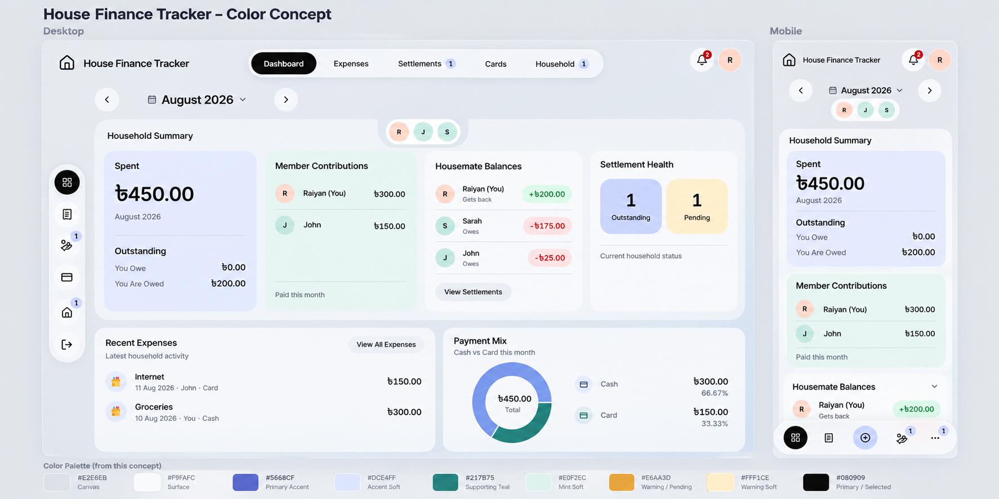
Original application references
These synthetic-fixture screenshots establish the existing layout and functionality.
Desktop reference · Mobile reference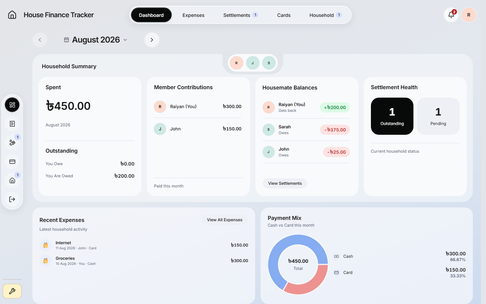

Seven color concepts pair desktop and mobile views of the main pages. Periwinkle and indigo lead; mint/teal supports; amber highlights pending states. The approved black actions, selections and glass navigation remain part of the direction.
Palette and design notesGeneration promptsRefinement promptsSource preservation
Indigo
#5668CF
Periwinkle
#DCE4FF
Teal
#217B75
Mint
#E0F2EC
Amber
#E6AA3D
Cream
#FFF1CE
Canvas
#E2E6EB
Surface
#F9FAFC
Black #080909 remains the primary action/selection color. Existing readable green/red financial labels retain their meaning. Warm amber is a fill/accent; small warning text uses a darker readable shade.

These synthetic-fixture screenshots establish the existing layout and functionality.
Desktop reference · Mobile reference
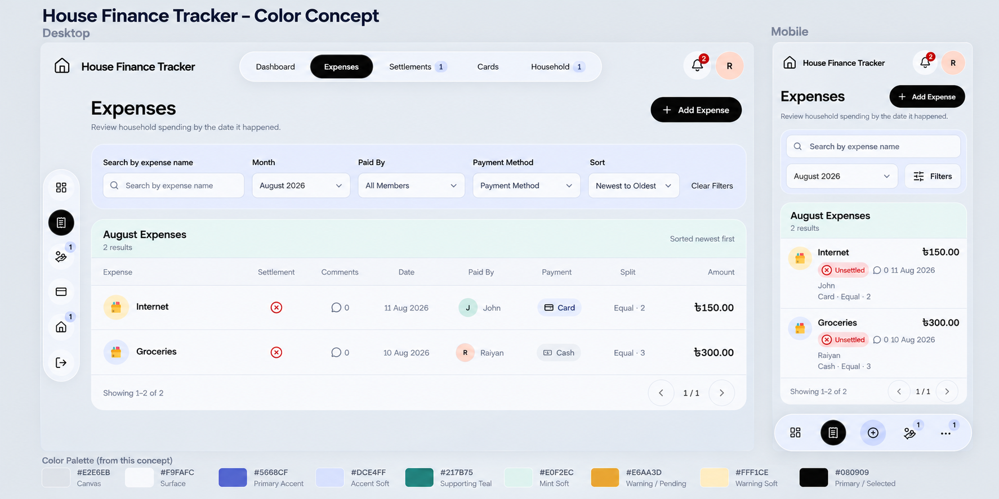
These synthetic-fixture screenshots establish the existing layout and functionality.
Desktop reference · Mobile reference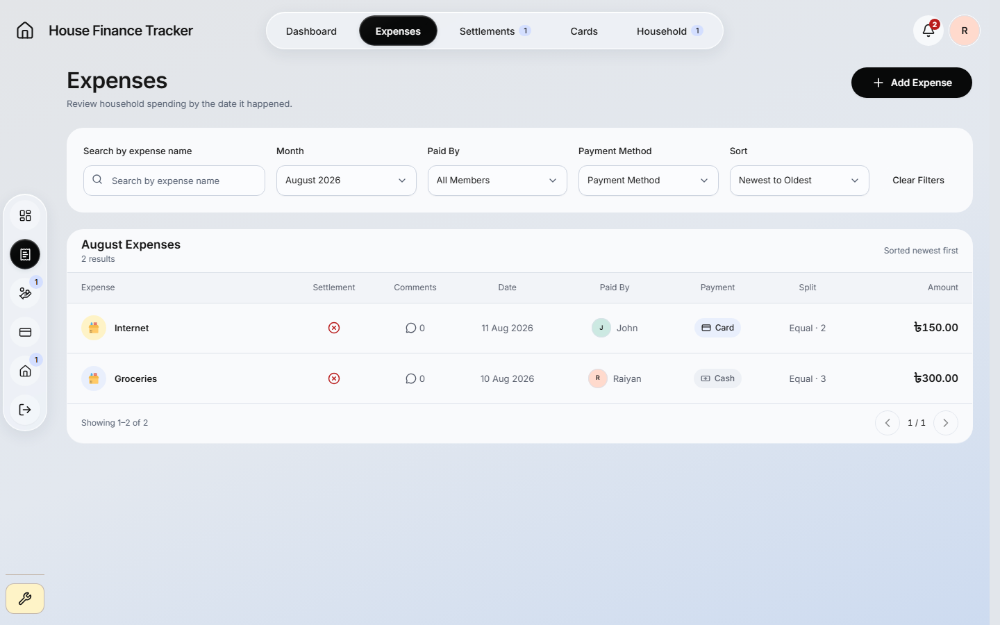
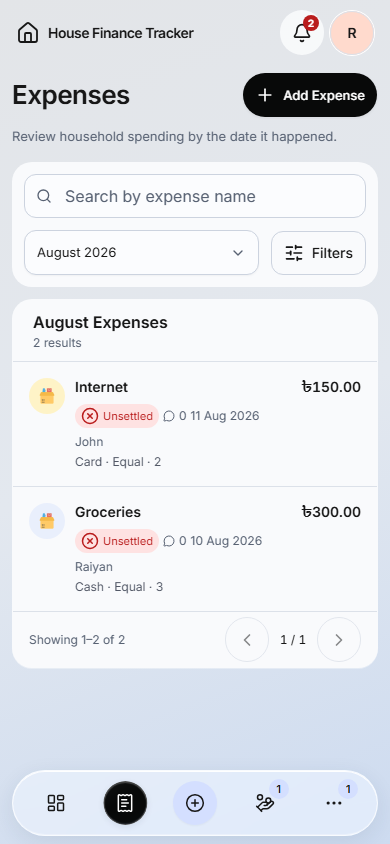
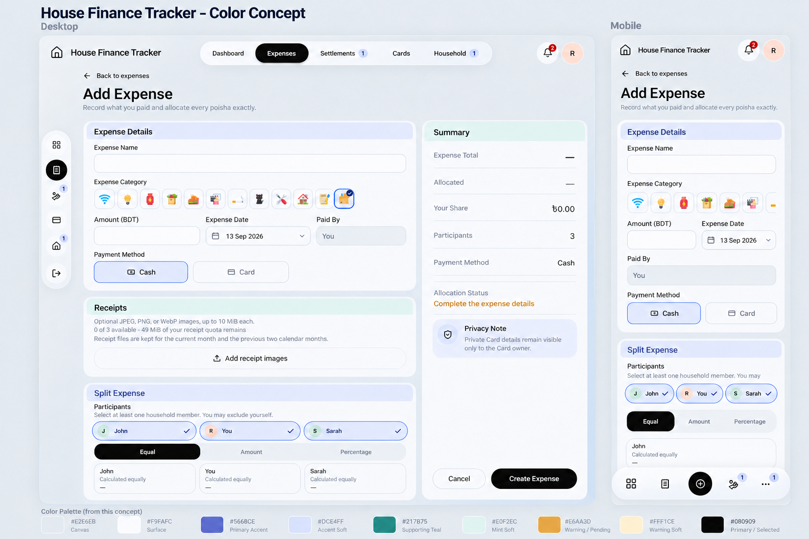
These synthetic-fixture screenshots establish the existing layout and functionality.
Desktop reference · Mobile reference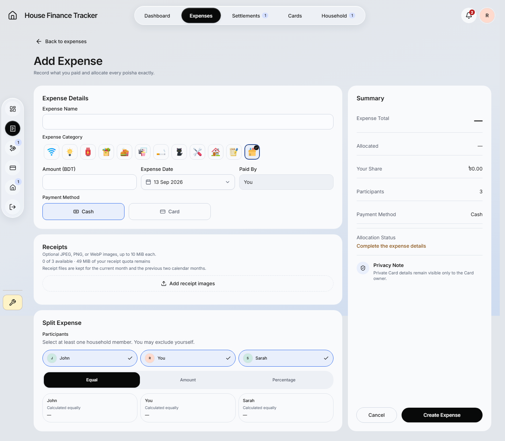
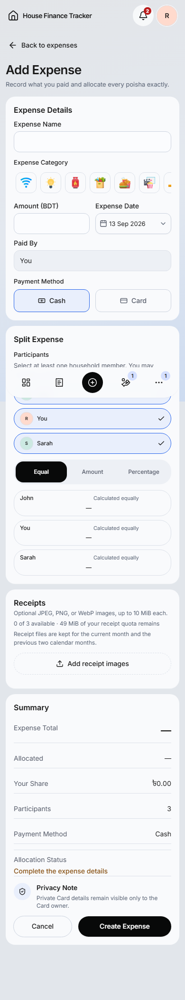
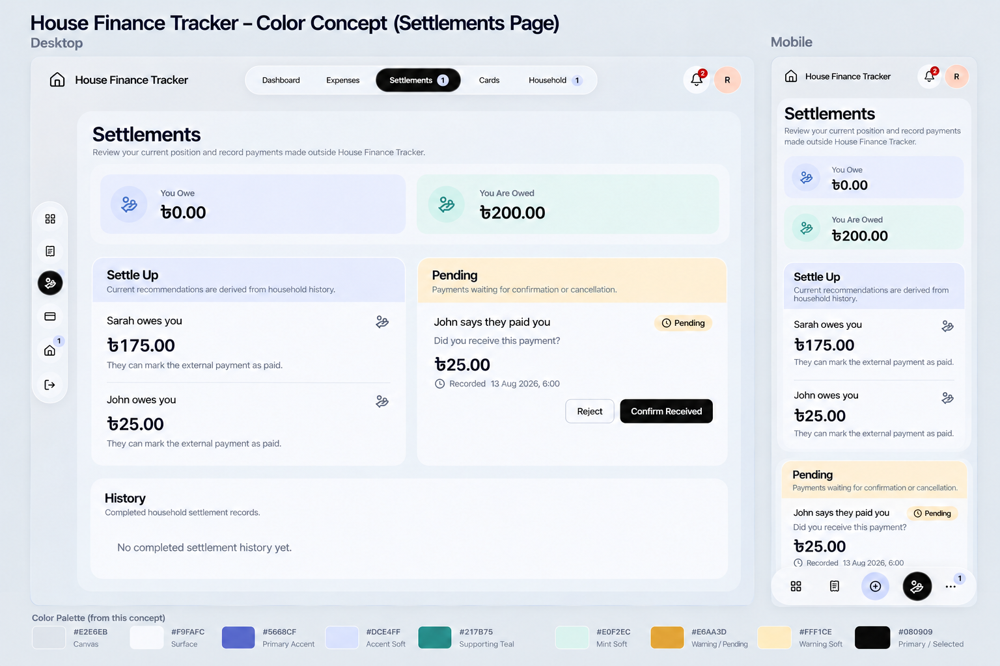
These synthetic-fixture screenshots establish the existing layout and functionality.
Desktop reference · Mobile reference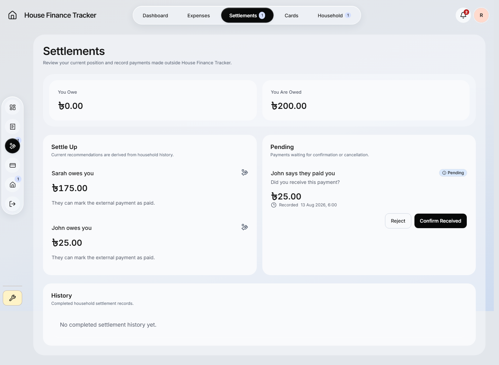

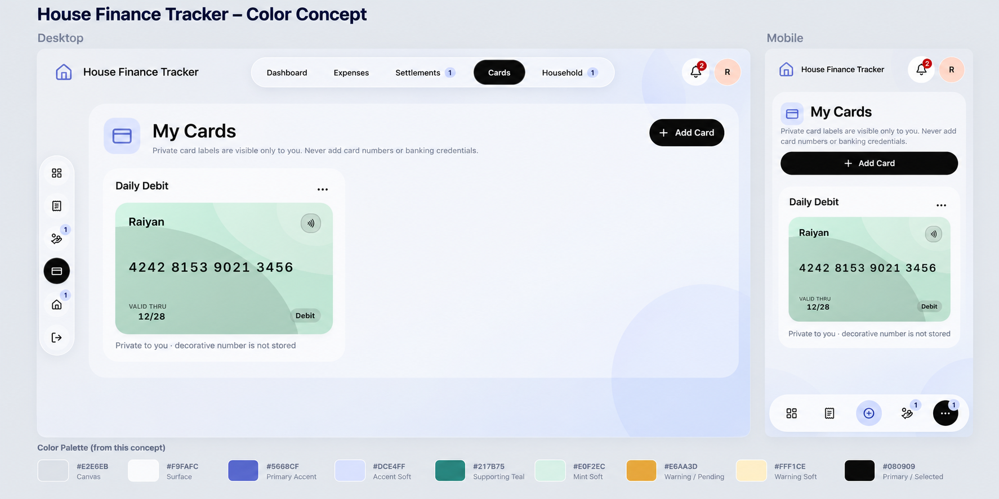
These synthetic-fixture screenshots establish the existing layout and functionality.
Desktop reference · Mobile reference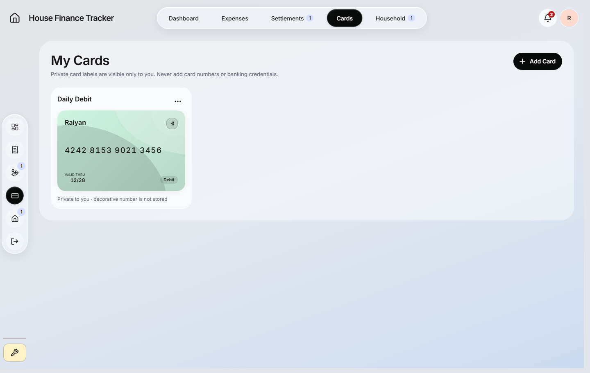
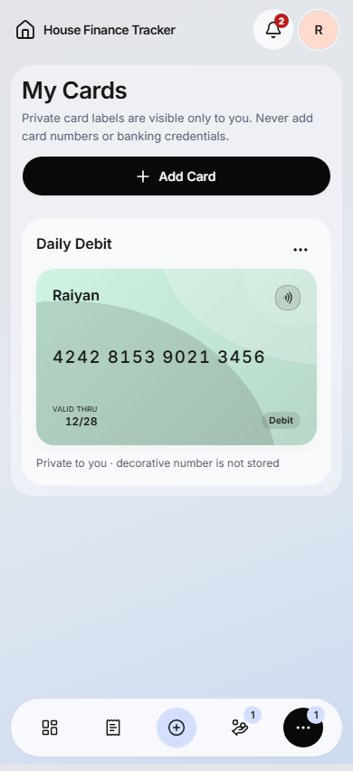
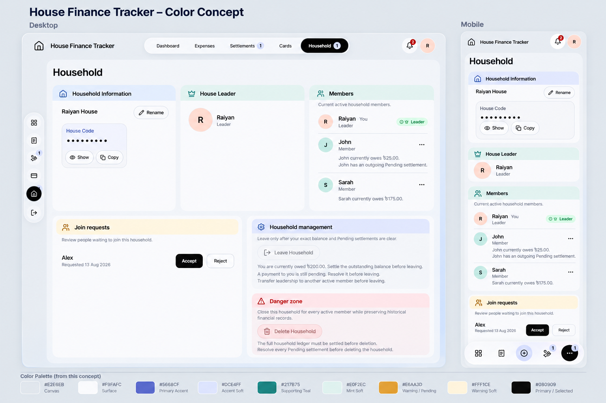
These synthetic-fixture screenshots establish the existing layout and functionality.
Desktop reference · Mobile reference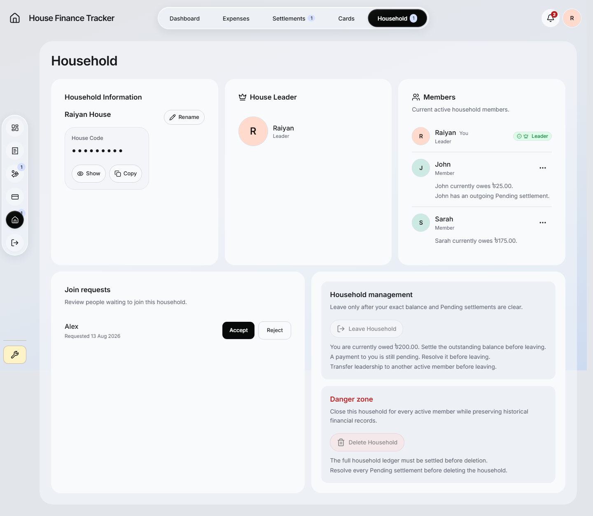

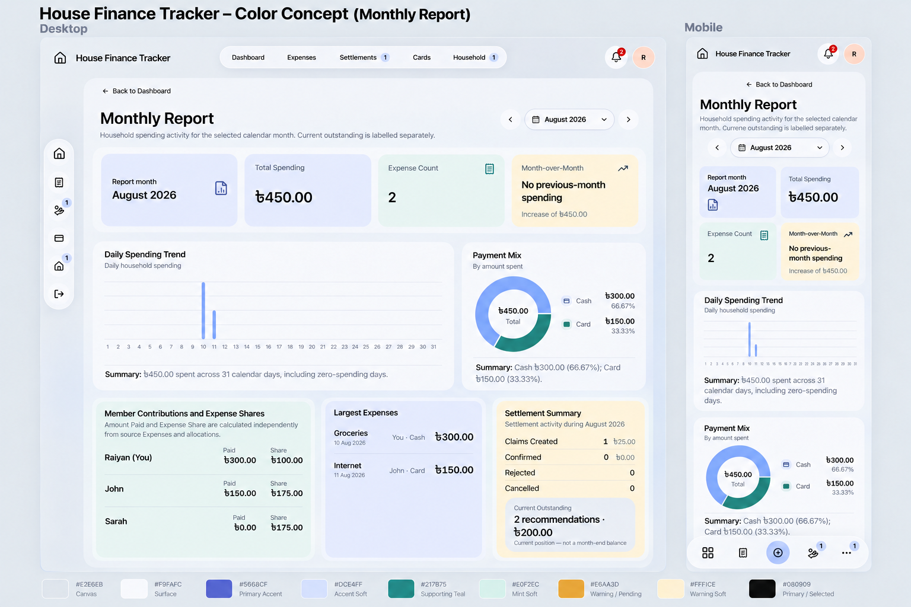
These synthetic-fixture screenshots establish the existing layout and functionality.
Desktop reference · Mobile reference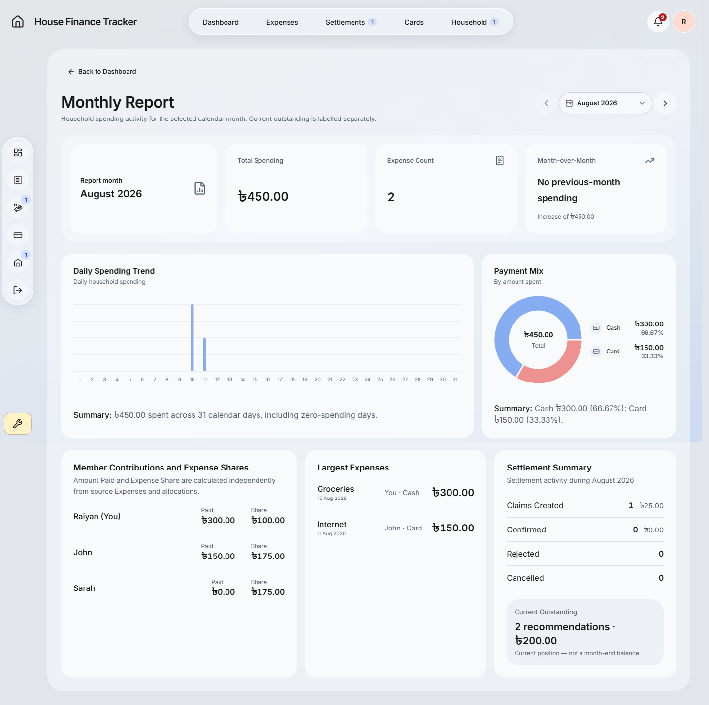

Generated design previews only. Minor glyph, badge, spacing and text differences are illustration limits, not proposed functional changes. Existing permissions, financial data, form controls and route rules remain authoritative. No application implementation or deployment occurred.